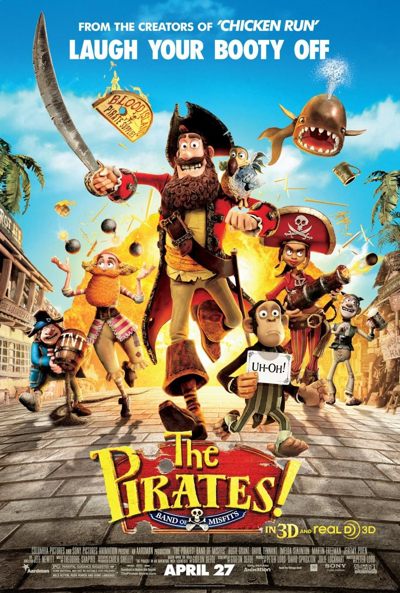

HOME
The Pirates! Band of Misfits is a charming and humorous animated movie that centers on the ambitious but somewhat naive Pirate Captain and his devoted crew. The crew sets out on a crazy and unpredictable journey full of sea battles, scientific discoveries, and royal drama in an attempt to win the coveted "Pirate of the Year" award.
This film, created by Aardman Animations, is known for its charming stop-motion animation and quirky sense of humor. Whether you love pirates, dodos, or pure ridiculous fun, The Pirates! Band of Misfits is sure to leave you grinning.
Company Credits: Aardman Animations, Sony Pictures Animation
Release Date: April 27, 2012
Genres: Animation, Adventure, Comedy
Rating: PG
Running Time: 88 minutes